Personal project
I diagnose, build and verify mechanical systems. International industrial field experience, automated vehicle diagnostics, hydraulic reliability and hands-on engine repair projects.
Interested in test & validation, vehicle and engine systems, motorsports assembly and marine mechanical service.
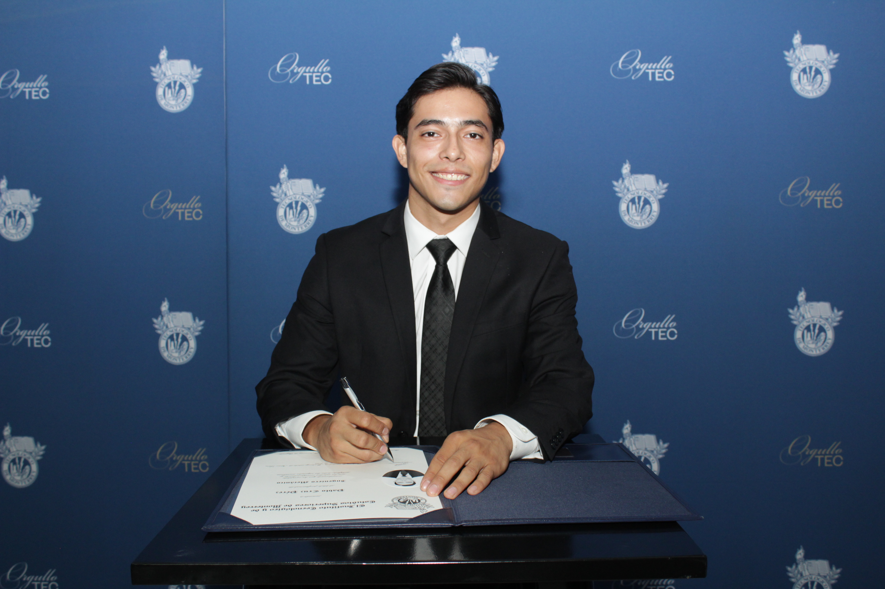
Professional, academic and personal work — clearly distinguished by scope, contribution, verification and limitations.
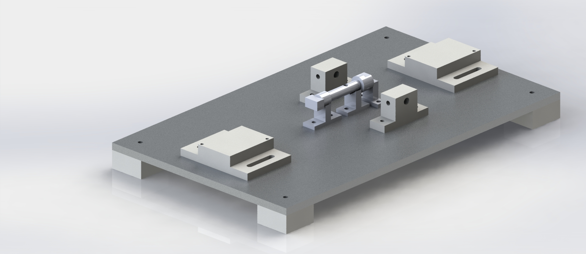

Snapshots from workshop projects, field assignments, competitions and personal travels.
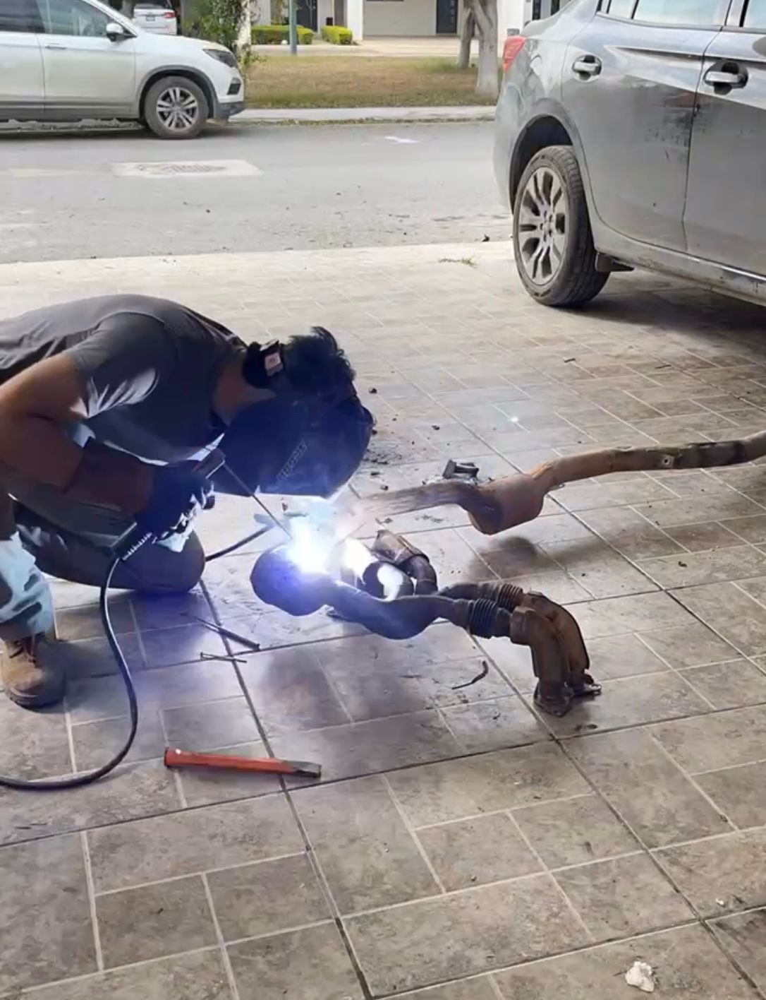
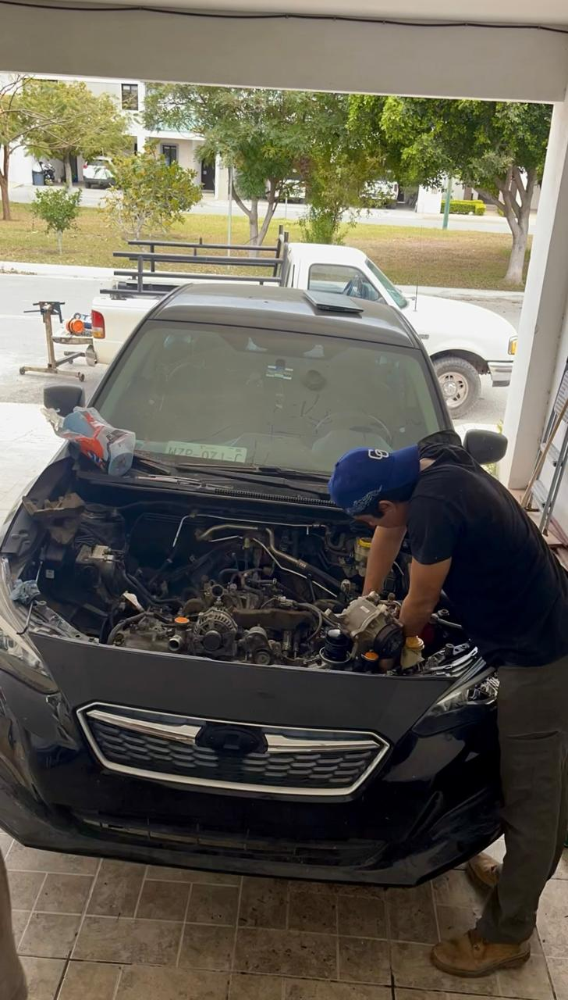
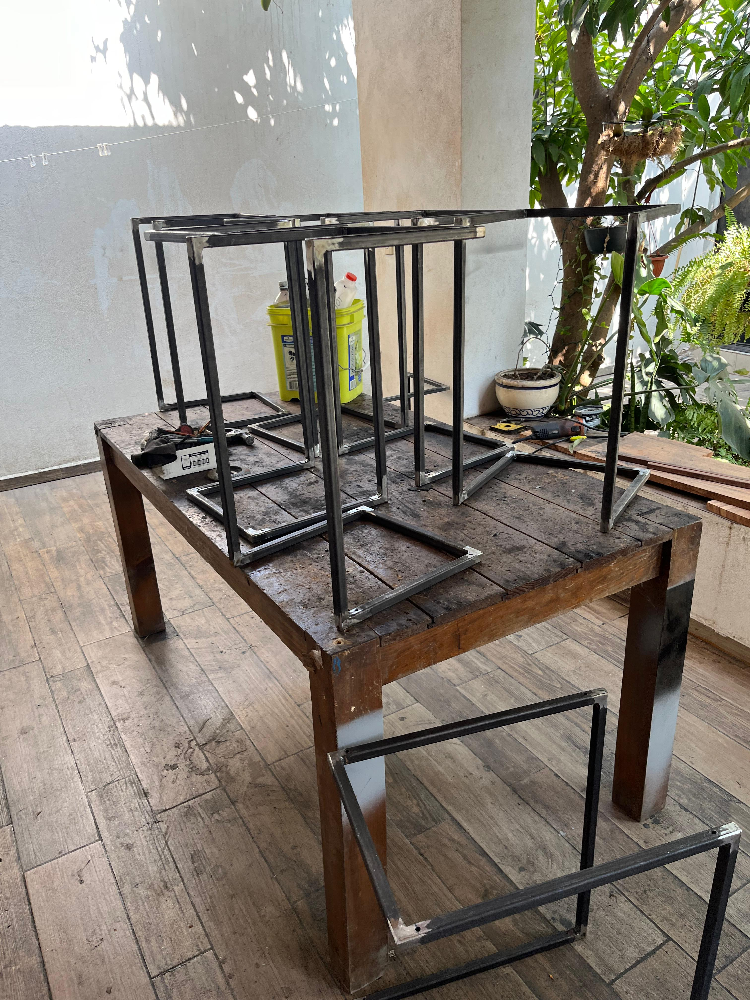
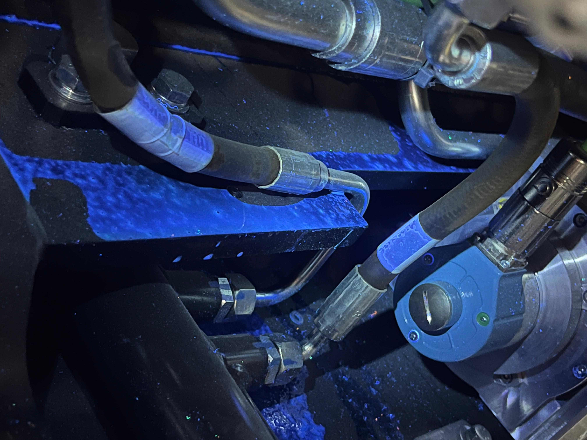
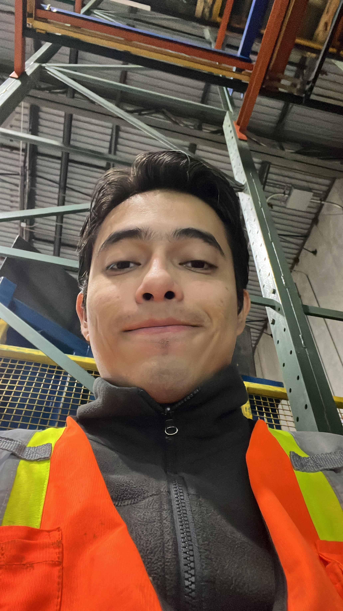
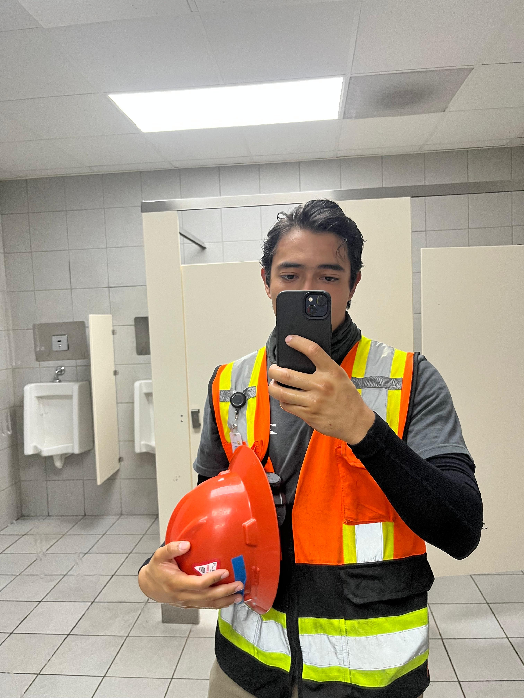
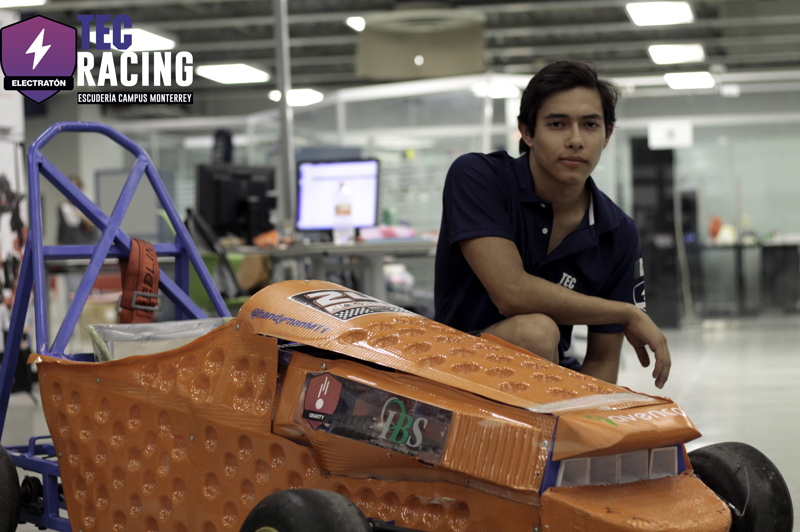
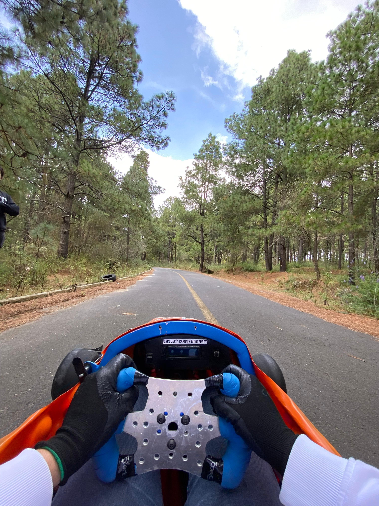
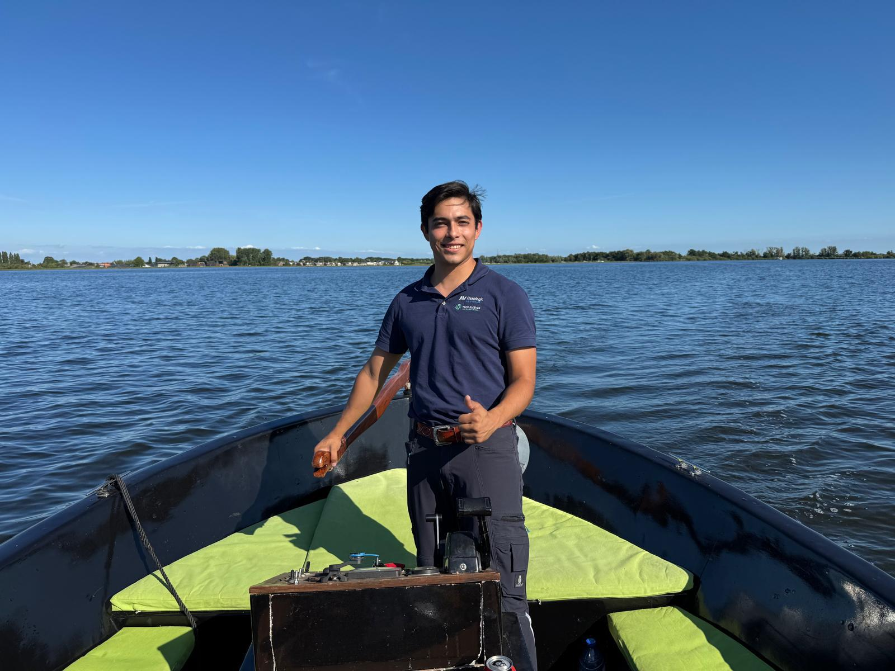
Mechanical engineering, safety and hands-on technical training.
Certified SolidWorks Professional
Certified SolidWorks Associate
Escuela Electrónica de Monterrey (ESEM)
Safety training
Netherlands — automated machinery, mechanical and pneumatic systems, sensors and vision.
B.S. Mechanical Engineering — Tecnológico de Monterrey, 2024.
My next technical focus is instrumented engine and vehicle testing: developing practical experience with data acquisition, CAN and structured test plans. These are learning goals, not completed professional experience.